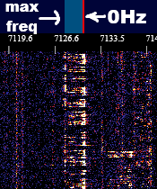

1. This displays the frequency you are currently tuned to, you can also enter your own frequency. This input is clamped in the backend though so you cannot tune outside of the 772kHz bandwidth.
2. These buttons allow you to choose what type of modulation you're using. AM is amplitude modulation, USB is upper sideband, and LSB is lower sideband. More about modulation below.
3. This adjusts the signal amplitude clientside.
4. This adjusts the signal amplitude serverside, this is needed to avoid clipping because the signal is clamped before being converted to a stream of 8 bit samples.
5. This adjusts the amount of bandwidth that is being listened to, the lighter colored square on the first row adjusts to indicate this.
6. This is the tuning cursor and shows what frequency is currently being listened to. The red bar is the center of the cursor while the lighter colored box attached to it shows what bandwidth is being let through. You can move it by clicking above the frequency you want to tune to.
7. This is the waterfall display itself and shows the frequency domain activity of the band. Scrolling on it will zoom in/out and clicking and dragging will move left/right.
AM signals can be identified as a carrier wave flanked by two sidebands as shown above. To tune into one, click the AM button and then line up the red line with the carrier frequency in the center. Adjust the bandwidth until the lighter colored square lines up with the sidebands as also shown above. All signal that is under the lighter colored square will be demodulated.
Single sideband signals are audio signals that have been shifted up to radio frequencies and are visible as blocks on the waterfall. Whether they're upper sideband or lower sideband can be deduced by where most of the energy of the signal is, as in audio, most of the signal energy is in the lower frequencies.
In the lower sideband signal above, you can see how most of the energy is near the red 0Hz carrier bar on the cursor. Upper sideband will be the same but the other direction. To tune into an SSB signal, first click either USB or LSB, then line up the red 0Hz bar with the lower frequency of the signal as shown above. Finally, move the cursor until the audio pitch is correct.